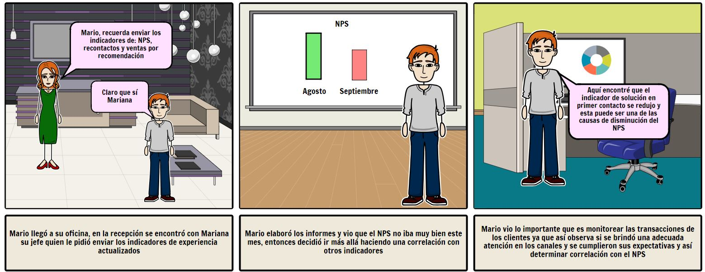
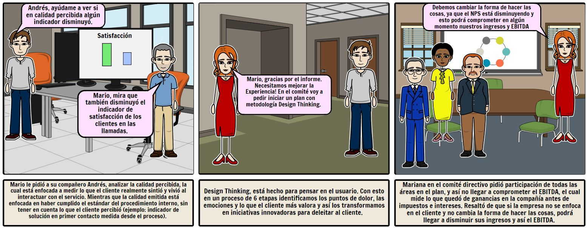

DISEÑO DE EXPERIENCIA
¿Por qué pensar en el cliente? Mira este video sobre el poder de pensar centrado en el Cliente
MEDICIÓN
¿Para qué medir la experiencia? En este Storyboard puedes ver algunos conceptos de la medición de la experiencia y la importancia de los indicadores.
 ATENCIÓN TELEFÓNICA
En esta sección se muestra un análisis de causas de la insatisfacción del servicio de atención telefónica de los usuarios. Como introducción escucha esta entrevista con Claudia Valbuena, una cliente real que ha tenido frecuentes insatisfacciones al llamar a un Call Center.
| Causa | Por qué 1 | Por qué 2 | Por qué 3 | Por qué 4 | Por qué 5 | Iniciativa |
|---|---|---|---|---|---|---|
| Me hablan con libretos | Las empresas ven necesarios los libretos | Los guiones son parte de las normas de etiquetas | Con los guiones el asesor se equivoca menos | Los asesores no son capaces de entablar conexión empática | No hacen sensibilización para hablar fluidamente | Simplificar los libretos y brindar talleres de empatía |
| Los asesores me piden hacer cosas obvias | Es parte de los procedimientos | Deben existir procedimientos y políticas estandarizadas | Sin los procedimientos el asesor comete más errores | Los asesores no analizan la problemática de cada cliente | No brindan sensibilización sobre resolución de problemas | Flexibilizar los procedimientos para dar soluciones personalizadas a los clientes |
| Me transfieren la llamada entre un asesor y otro | El procedimiento establece la transferencia de la llamada | El asesor no está empoderado para atender todos los requerimientos | El asesor requiere mayor tiempo de capacitación | Los procedimientos son largos y requieren capacitación rigurosa | - | Simplificar los cronogramas de capacitación, empoderando al asesor en todos los trámites |
| Es muy molesto escuchar los audiorespuesta | Los sistemas de audiorespuesta son muy complejos | El audiorespuesta está diseñado para atender la mayor cantidad de llamadas | Se piensa primero en la eficiencia antes que solucionar al cliente | - | - | Simplificar y rediseñar los sistemas de audiorespuesta con metodologías centradas en el cliente. |
CENTRO DE SERVICIO
En algún momento todos hemos vivido esta situación. Veamos a continuación como rediseñar esta experiencia.
SERVICIO DE SALUD
Aquí veremos el viaje ideal de Raúl, un cliente de EPS Sánitas, quien a lo largo de su ciclo de vida vive una experiencia magnífica con su servicio de salud.